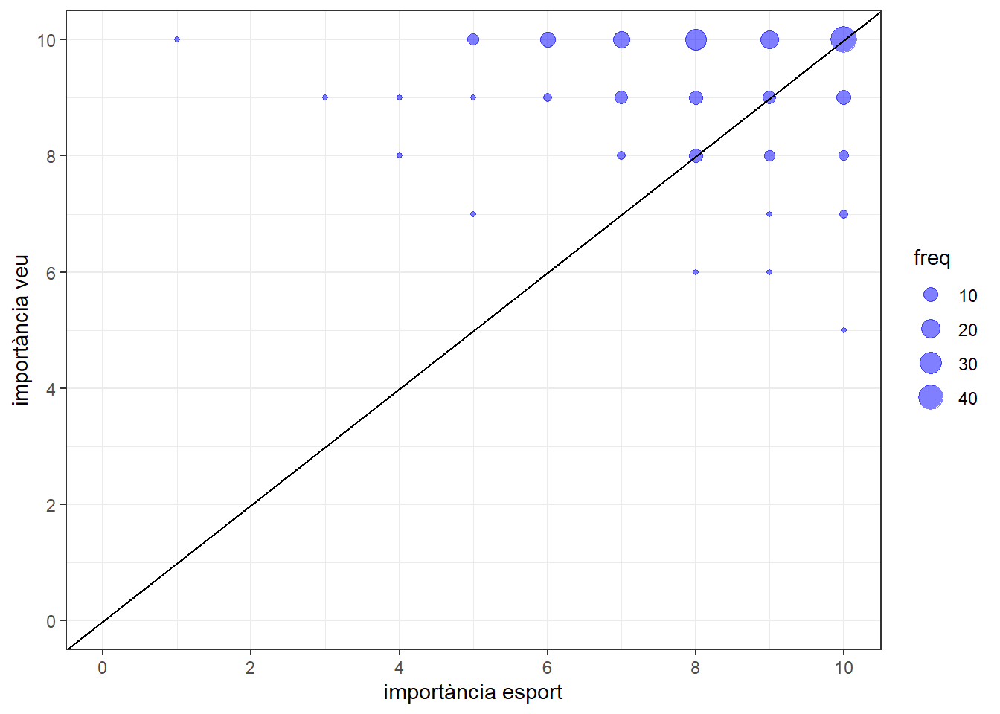
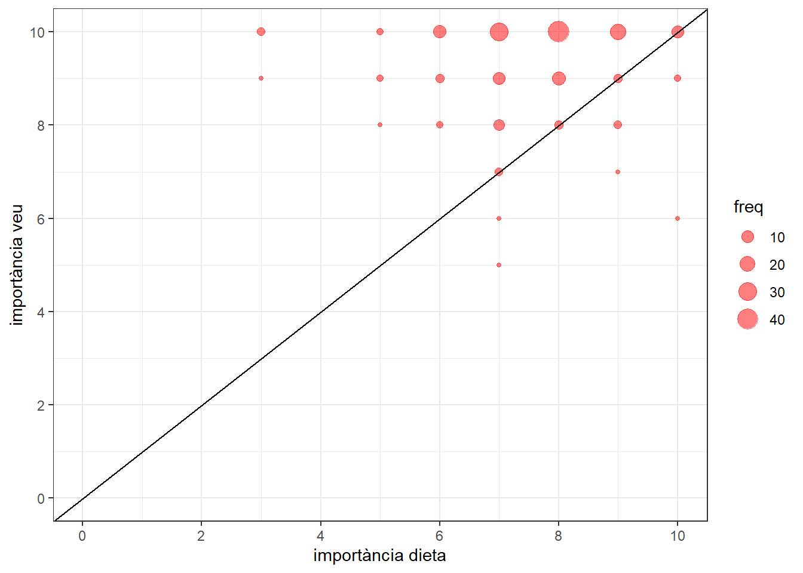
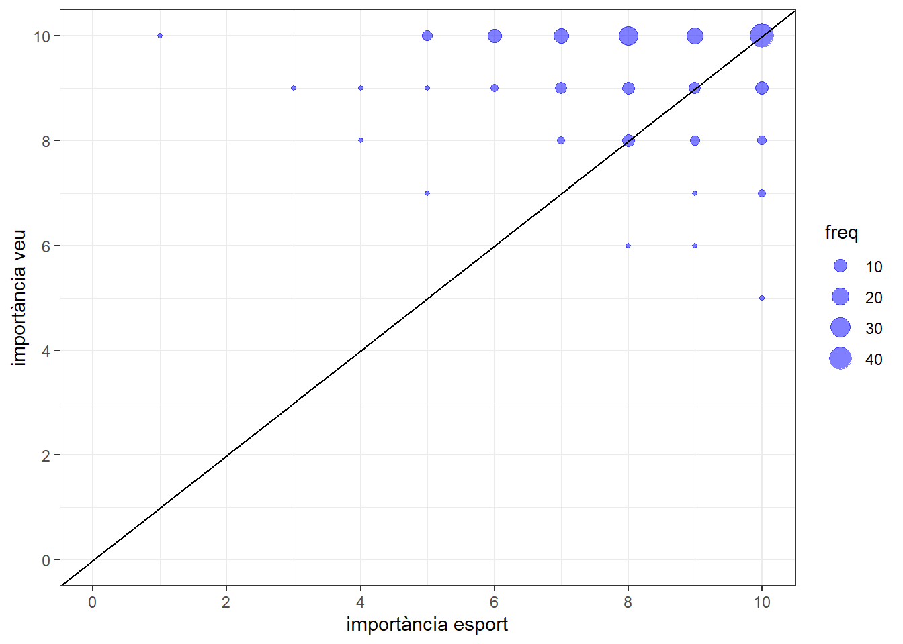
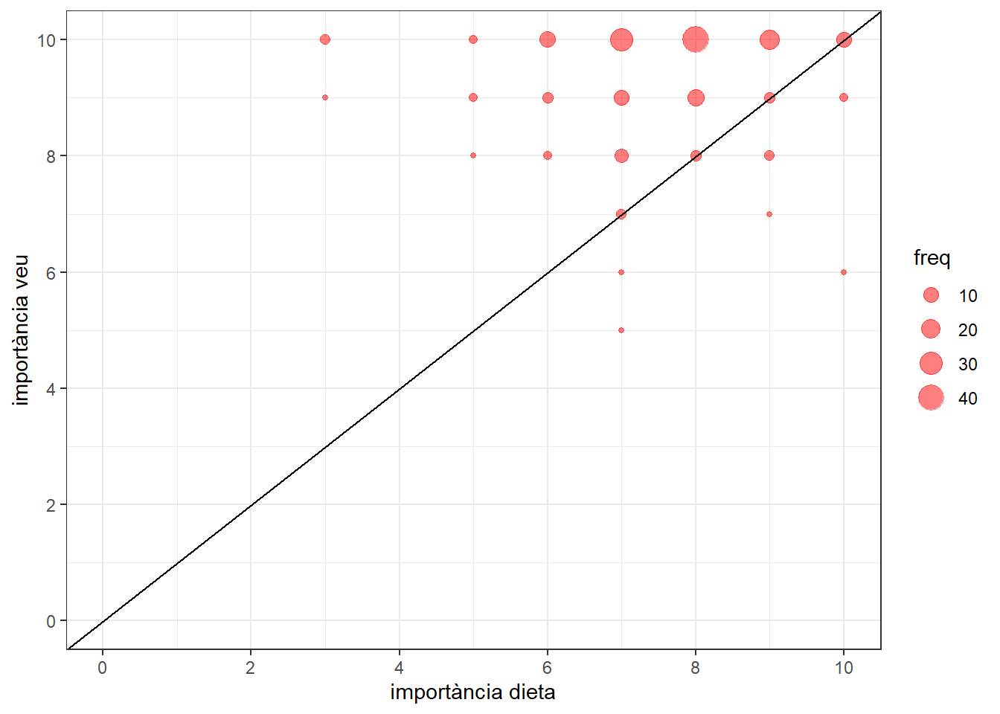
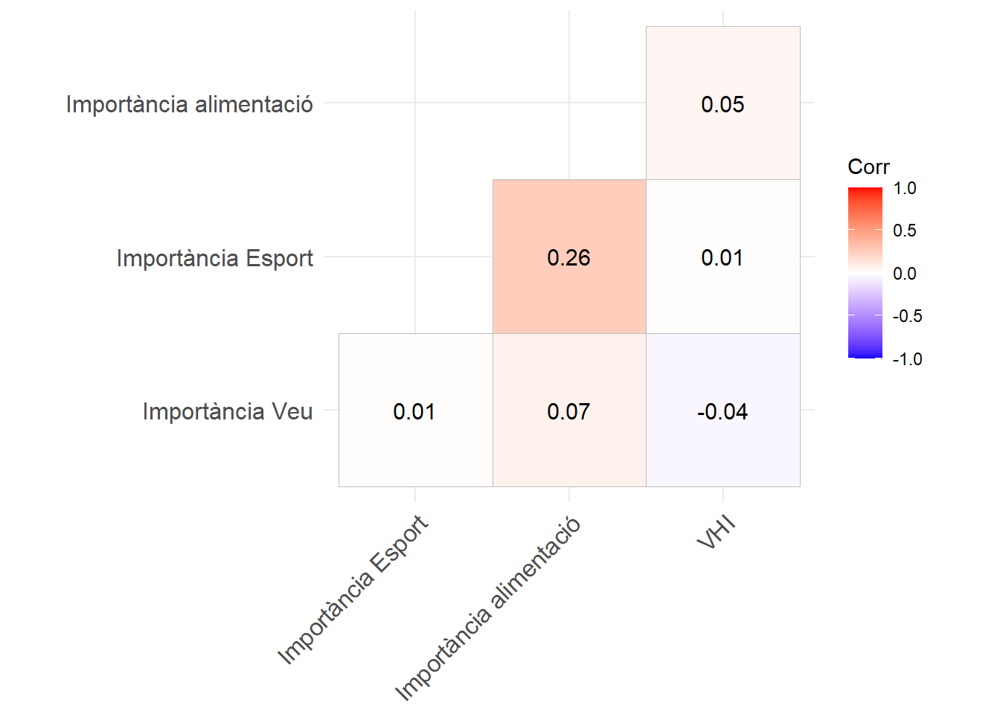

Pregunta 1: Els professors donen manco importància a la veu que a l’esport o l’alimentació?
Enllaç git.
Inicialment creuarem les dades d’importància a la veu amb importància a l’alimentació; i d’importància a la veu amb importància a l’esport.


La recta diagonal del gràfic indica la resposta de donar la mateixa importància als dos factors. Si s’està per damunt, es dona més importància a la veu, i de fet veim que aquest és el cas més freqüent. De fet, en el cas de l’alimentació la importància a la veu envers de l’alimentació és més marcada. Notem també que en general la importància donada a les respostes és alta.
Vegem si hi ha cap relació lineal entre les variables d’interès.

Veim que la importància a l’esport i l’alimentació amb la veu no estan gens correlacionades. És més, tampoc no es veu una correlació entre la importància a la veu i la VHI, i curiosament el valor obtingut és negatiu.
Anem a veure també la distribució de les respostes, així com alguns estadístics.

Length Class Mode
3 formula call Analitzant el gràfic, podem veure que les tendències de les respostes segueixen un ordre. Les respostes a la veu solen ser més altes que a esport, i aquestes darreres a alimentació. Així, les medianes a cada variable també segueixen aquest ordre.
Comprovarem si la diferència observada entre les medianes es pot inferir a la població. Aplicarem un test ANOVA paramètric per blocs, on cada una de les persones representa un bloc, i els tractaments són donar importància a l’alimentació, a l’esport, o a la veu.
Intuïtivament podem pensar que sí hi ha interacció entre blocs i tractaments: la diferència entre importància donada a alimentació i veu pot variar molt entre els individus.
Friedman rank sum test
data: nota and Tractament and id
Friedman chi-squared = 158.43, df = 2, p-value < 2.2e-16El p-valor és ínfim, i concloem que en mitjana no es dona la mateixa importància a esport, veu i alimentació.
Pairwise comparisons using Wilcoxon signed rank test with continuity correction
data: df_anova$nota and df_anova$Tractament
dieta_saludable importancia_deporte
importancia_deporte 3.0e-07 -
importancia_voz < 2e-16 1.1e-12
P value adjustment method: holm En mitjana es dona una importància diferent a cada un dels tres aspectes.
La idea és contestar la pregunta de “la formació en veu afecta a la seva percepció de qualitat?”. A partir de les dades recollides, proposam fixar-nos en les respostes a “Té formació sobre salut vocal?” i fer tres grups:
Fora formació
Formació independent (respostes a “vaig fer un curs fa temps” i “he fet un curs pel meu compte”)
Formació concreta (respostes a “logopeda” i “curs de servei de precaució”)
Llavors, mostrar en un gràfic de violí les densitats de la VHI a cada grup, i fer una ANOVA d’una via amb les poblacions.
Cap a dir que les respostes al qüestionari semblen incoherents en ocasions. Centrant-nos en les variables tractades en aquesta pregunta, les tendències a la importància donada a veu, esport i alimentació són pràcticament sempre molt altes. De fet, la densitat de la resposta a la importància a la veu sembla estar condicionada pel fet de respondre un qüestionari sobre el propi tema. Proposam valorar les importàncies donades als factors en base a criteris objectius preestablers per aconseguir una representació més fidel. Per exemple, hi ha individus responent amb molta importància a l’esport que realitzen manco esport a individus que n’hi donen molt poca; o individus que consumeixen alcohol, gaseosa i cafès habitualment que donen molta importància a la dieta.